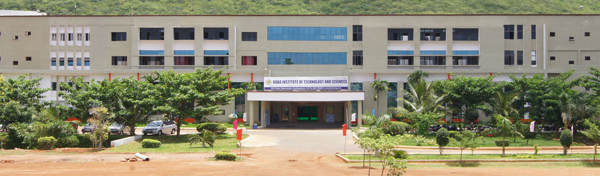

BABA INSTITUTE OF TECHNOLOGY AND SCIENCES is located
in asrawling area of 15 acres of land, P.M Palem, Madurwada, about 1 km
away from National Highway. It is uniquely and idealy situated at the foot of a
long and thick greenish, imposing hill lockon western and southernsides overseeing the building complex.